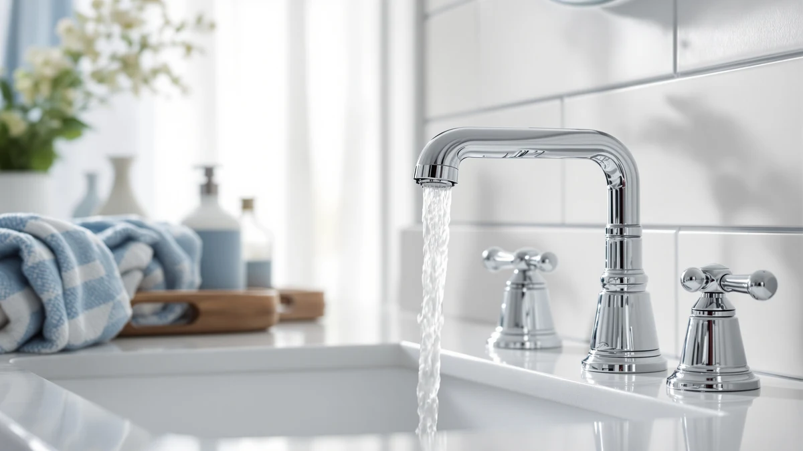

The Best Sink Faucets For hard water (2026)
Prices and picks verified as of September 2026. Independent, reader-supported reviews.


Quick Answer
Look for a brushed or matte finish over polished chrome, since brushed nickel, brushed gold, and matte black all hide mineral spots far better than a mirror-smooth surface. Our top pick, the FORIOUS 2 Pack Black Bathroom faucet, pairs a spot-resistant matte black finish with a price that covers two sinks.
Our pick: FORIOUS 2 Pack Black Bathroom ($69.99) Check Price on Amazon
Bottom line: our top pick is the FORIOUS 2 Pack Black Bathroom Faucets at $54.99. The best budget option is the Bathroom Faucet Brushed Nickel Modern Single Hole Bathroom at $29.99.
Things to Know Before You Buy
- Finish matters more than brand. A brushed nickel, brushed gold, or matte black surface scatters light and hides the white mineral flecks that hard water leaves behind, while polished chrome shows every spot within a day or two.
- A faucet will not soften your water. Nothing you install on the sink deck removes minerals from the supply line. If staining and scale buildup are a bigger concern than looks, pair your new faucet with a whole-house or under-sink filter.
- Check your hole count before you buy. Centerset faucets fit a standard 4-inch three-hole sink, widespread models need holes spread 8 inches or more apart, and a single-hole faucet needs only one opening. Buying the wrong spread means a return.
- Brass bodies outlast plated pot metal. Every faucet in this guide uses a brass body under the finish, which resists the pitting and corrosion that hard water minerals accelerate on cheaper zinc alloy fixtures.
- Wipeable spouts save you scrubbing. A smooth, textured finish you can pass a microfiber cloth over in seconds beats one with tight grooves where mineral film collects and hardens.
The best sink faucets for hard water share one trait: a finish and body built to resist the mineral spots and buildup that hard water leaves behind, so you are not scrubbing the same white flecks off your faucet every week. Chalky calcium and magnesium deposits show up fast on a shiny surface, and once they harden into scale they are harder to remove without damaging the plating underneath. A faucet that hides those spots between cleanings saves you time and keeps your bathroom looking finished.
Our pick is the FORIOUS 2 Pack Black Bathroom faucet. Its matte black finish scatters light instead of reflecting it, so mineral spots blend in rather than standing out the way they do on chrome, and buying it as a two-pack means you can outfit two sinks for less than the price of most single widespread faucets on this list. If a two-pack centerset is not the right fit for your sink, we cover six other faucets below with different finishes, hole spreads, and price points.
We compared seven brass bathroom faucets ranging from $29.99 to $406.27, all with brushed, matte, or plated finishes chosen for how well they resist visible spotting. We looked at finish type, brass construction, hole spread, price, and how each faucet is described and reviewed by owners, then weighed those against the practical reality of a hard water sink: it is going to get mineral film on it, and the question is how much that film shows.
Why You Should Trust Us
I am Ilane Tall, and I cover bathroom fixtures for Best Bathroom Faucets. Hard water is one of the most common complaints readers bring to us, not because a faucet can soften their water, but because they are tired of wiping white spots off a fixture that looked brand new a month ago. For this guide I focused on the one variable a faucet buyer can actually control: how much a finish shows mineral buildup between cleanings.
I do not run a paid testing lab or invent expert quotes. I compare manufacturer specs, examine the finish and construction of each faucet, and read through verified owner reviews for recurring mentions of spotting, tarnish, or scale. Where a product has a real drawback, I say so. The Amazon links in this article are affiliate links, which means we may earn a commission if you buy, and that never changes which faucets we recommend or how we rank them.
How We Picked
To build this list, I started with finish. Anything advertised only in polished chrome or shiny stainless got a lower priority, since those surfaces reflect light and make hard water spotting the most visible. I kept faucets available in brushed nickel, brushed gold, and matte black, all finishes that scatter light and hide mineral film, and included one polished chrome pick from a major brand because its reputation and cartridge quality still make it worth considering.
From there I weighed construction and price together. Every faucet here uses a brass body, which resists the corrosion and pitting that hard water accelerates on cheaper zinc alloy faucets, so the differences between picks come down to finish, hole spread, and how much you pay for the name on the box. I also made sure the list covered different install types, centerset, widespread, and a two-pack option, so this guide works whether you are outfitting one bathroom or several.
Price range mattered too. I kept the field spread from under $30 to over $400 so that a renter replacing a builder-grade faucet and a homeowner doing a full remodel both have a real option here, not a single price tier dressed up as variety.
How We Compared
We compared each faucet the way a hard water household actually uses one. We read the finish description and cross-checked it against how that finish type behaves with mineral deposits, since brushed and matte surfaces disperse light and hide spotting while polished chrome and stainless show it almost immediately. We looked at the hole spread and body dimensions listed for each faucet so buyers can match it to their existing sink without guessing.
We also weighed price against what each faucet includes, from the FORIOUS two-pack that covers two sinks for less than most single widespread faucets to the Kohler Devonshire, where you are paying largely for brand reputation and a known cartridge. Where owner reviews mentioned recurring issues, like a lever that feels light or a shorter reach than expected, we noted it in that faucet's cons so you know the tradeoff going in.
Our Picks

FORIOUS 2 Pack Black Bathroom
What we like
- Matte black finish scatters light instead of reflecting it, so mineral spots blend in rather than standing out
- Sold as a two-pack, which covers two sinks for close to the price of one mid-range faucet
- Centerset spread fits the standard 4-inch three-hole sink found in most US bathrooms
Flaws but not dealbreakers
- Matte finishes show fingerprints more readily than they show water spots, so it still needs an occasional wipe
- Centerset only, so it will not fit a widespread sink without a separate deck plate
| Material | Brass + finish |
| Size | Centerset |
The FORIOUS 2 Pack is our top pick because it solves the hard water spotting problem at the finish level instead of asking you to clean more often. Matte black diffuses light across its surface, so the same mineral film that turns into a glaring white spot on chrome disappears into the finish here instead. That matters most in a household where nobody wants to towel-dry the faucet after every use.
Buying two faucets for $69.99 total also changes the math for anyone furnishing a full bathroom or replacing matching fixtures in a shared bathroom and a powder room. The centerset spread fits the three-hole sink layout most US homes already have, so installation should not require redrilling. The one tradeoff of a matte finish is that it picks up fingerprints and smudges more readily than a polished one, even as it hides mineral spotting, so you will still want a quick wipe now and then to keep the sheen even.

Delta Dryden Brushed Gold Bathroom
What we like
- Brushed gold finish hides mineral spotting the same way brushed nickel does, with a warmer tone
- Delta is one of the more established names in bathroom fixtures, which matters for parts and warranty support
- Brass body construction under the finish
Flaws but not dealbreakers
- Priced well above every other faucet on this list, largely for the brand name
- Sold as a single faucet, so equipping more than one sink gets expensive fast
| Material | Brass + finish |
| Size | (Pack of 1) |
The Delta Dryden is our runner-up for buyers who want a recognized name attached to their hard water pick. Its brushed gold finish does the same job as brushed nickel, breaking up light so mineral film does not stand out, with a warmer tone that suits gold or brass bathroom hardware instead. Delta's reputation also means replacement cartridges and parts are easier to find years down the line than with a smaller brand.
What you are mainly paying the extra few hundred dollars for is the name and the finish quality, not a feature this list's budget picks lack entirely. At $406.27 for a single faucet, it only makes sense if your budget and your bathroom's finish scheme call for it specifically. For most hard water households, a brushed nickel or matte black faucet at a fraction of the price solves the same spotting problem equally well.

Bathroom Faucet Brushed Nickel Modern
What we like
- Brushed nickel finish at the lowest price of any faucet on this list
- Short, compact profile fits easily under a mirror or shallow vanity
- Modern single-handle look without the widespread price tag
Flaws but not dealbreakers
- VOTON is a less established name than Delta or Kohler, so support and replacement parts are less certain long term
- Short spout gives less clearance over a deep basin than the taller picks on this list
| Material | Brass + finish |
| Size | Short |
At $29.99, the Bathroom Faucet Brushed Nickel Modern is the cheapest way onto this list, and it does not cut the one corner that matters for hard water. The brushed nickel finish scatters light the same way the pricier picks here do, so mineral spots stay muted instead of glaring the way they would on a chrome faucet at this price point.
Its short profile is a practical fit for vanities with a mirror or medicine cabinet mounted close to the sink, where a taller faucet can crowd the space. The tradeoff for the price is brand recognition. VOTON does not carry the decades of parts availability that Delta or Kohler do, so if a cartridge fails down the line, replacement may take more searching. For a rental or a first apartment bathroom, that tradeoff is an easy one to accept.

Phiestina Centerset 4 Inch Brushed
What we like
- 4-inch centerset spread matches the most common US sink hole spacing
- Brushed finish hides mineral spotting without the premium price of a name brand
- Priced under $40, one of the least expensive faucets on this list
Flaws but not dealbreakers
- phiestina is a newer name in the space, with less of a review history than Delta or Kohler
- No pack option, so outfitting multiple sinks means buying more than one at full price
| Material | Brass + finish |
| Size | — |
The Phiestina Centerset is our budget pick because it hits the two things a hard water buyer actually needs, a 4-inch spread that fits the standard three-hole sink and a brushed finish that hides mineral spotting, without the price climbing past $40. That combination is harder to find than it sounds, since a lot of budget faucets stick with polished chrome because it is cheaper to produce.
Brass construction under the finish means it should hold up to the corrosion hard water accelerates on cheaper metals, even at this price. The main thing you give up compared to the pricier picks here is brand history. Phiestina has a shorter track record than Delta or Kohler, so if you want maximum confidence in long-term parts availability, that is worth weighing against the savings.

KOHLER K-394-4-CP Devonshire® Widespread Bathroom
What we like
- Kohler is one of the longest-standing names in plumbing fixtures, with wide parts availability
- Widespread install suits sinks with hot and cold handles set further apart
- Polished chrome pairs with chrome hardware elsewhere in the bathroom
Flaws but not dealbreakers
- Polished chrome is the finish most likely to show hard water spots quickly, so it needs more frequent wiping than the brushed picks here
- Priced well above the budget and brushed nickel options on this list
| Material | Brass + finish |
| Size | Widespread |
The Kohler Devonshire is on this list for a specific reason: some buyers want a widespread faucet from a brand with a decades-long track record, and are willing to trade spot resistance for that reputation. Kohler's parts and warranty support are hard to match, and the polished chrome finish suits a bathroom where the rest of the hardware is already chrome.
The honest tradeoff is that polished chrome is the finish least suited to hard water. It reflects light the way a mirror does, so mineral spots show up faster and more visibly than they would on the brushed nickel or matte black picks above. If you choose this faucet, plan on wiping it down a few times a week rather than once. For buyers who prioritize brand and finish over minimizing cleaning, it is still a reasonable choice.

Ryuwanku Waterfall Bathroom Faucet Brushed
What we like
- Open waterfall spout design at a budget price point
- Brushed finish hides mineral spotting the same way it does on the other picks here
- Short profile suits a shallow vanity or a sink close to a mirror
Flaws but not dealbreakers
- An open waterfall spout can splash more than a standard aerator-equipped spout, which means more water hitting the deck around the sink
- ryuwanku is a smaller brand with a shorter track record than Delta or Kohler
| Material | Brass + finish |
| Size | Short |
The Ryuwanku Waterfall gives you a distinctive open-spout look for close to the price of a basic single-handle faucet. The brushed finish carries over the same hard water advantage as the rest of this list, breaking up light so mineral film does not stand out the way it would on a polished surface, while the wide, flat spout gives the sink a different visual style than a standard rounded faucet.
The waterfall design is worth knowing about before you buy. An open, unenclosed stream tends to splash a bit more around the sink deck than a spout with a standard aerator, so you may find yourself wiping the counter more than the faucet itself. At $30.59, it is a low-risk way to try the waterfall style in a bathroom you are updating on a budget.

Cinwiny Brushed Nickel Widespread Bathroom
What we like
- Widespread three-piece design at a fraction of the Kohler Devonshire's price
- Brushed nickel finish hides mineral spotting better than the chrome widespread option on this list
- Separate hot and cold handles suit sinks with wider spacing
Flaws but not dealbreakers
- Cinwiny is a less established brand, with less of a review and parts history than Kohler
- Three separate pieces mean more parts to align and seal correctly during install than a single-body faucet
| Material | Brass + finish |
| Size | — |
The Cinwiny Widespread fills a gap the rest of this list leaves open: a widespread faucet with a hard-water-friendly finish that does not cost close to $300. Its brushed nickel surface does the same light-scattering job as the other brushed picks here, so if your sink has separated hot and cold handles, you are not stuck choosing between that layout and a spot-hiding finish.
At $45.99, it is priced closer to the centerset budget picks than to the Kohler widespread option, which makes it the more practical choice for anyone who does not need the Kohler name specifically. The tradeoff is a shorter brand track record and a three-piece install, which takes a bit more care to line up and seal than a single-body faucet, but neither is a serious obstacle for a typical bathroom sink swap.
Quick Comparison
| Product | Material | Price | Rating | Best for | Get it |
|---|---|---|---|---|---|
| FORIOUS 2 Pack Black Bathroom | Brass + finish | $69.99 | 4 | Two sinks, matte black | View on Amazon → |
| Delta Dryden Brushed Gold Bathroom | Brass + finish | $406.27 | 4 | Name brand, brushed gold | View on Amazon → |
| Bathroom Faucet Brushed Nickel Modern | Brass + finish | $29.99 | 4 | Lowest-price brushed pick | View on Amazon → |
| Phiestina Centerset 4 Inch Brushed | Brass + finish | $39.99 | 4 | Standard 3-hole sink on a budget | View on Amazon → |
| KOHLER K-394-4-CP Devonshire® Widespread Bathroom | Brass + finish | $289.74 | 4 | Widespread sinks, chrome fans | View on Amazon → |
| Ryuwanku Waterfall Bathroom Faucet Brushed | Brass + finish | $30.59 | 4 | Waterfall look on a budget | View on Amazon → |
| Cinwiny Brushed Nickel Widespread Bathroom | Brass + finish | $45.99 | 4 | Widespread sinks on a budget | View on Amazon → |
What is the best faucet finish for hard water?
Brushed nickel, brushed gold, and matte black finishes all hide mineral spots better than polished chrome, because their textured surface scatters light instead of reflecting it the way a mirror-smooth chrome finish does.
Do you need a special faucet for hard water, or only a filter?
A whole-house softener or under-sink filter addresses the minerals in your water supply, while the faucet you buy only controls how visible the buildup is on the fixture itself.
The Competition
Several common faucet types did not make this list of the best sink faucets for hard water. Polished stainless steel faucets show mineral spotting even more readily than chrome, since both the reflectivity and the lighter base color make white mineral flecks stand out, so we left stainless-only options off in favor of finishes that scatter light. We also passed over faucets sold only in oil-rubbed bronze, since that finish tends to show water spots as lighter marks against a dark background, which is a similar visibility problem in reverse.
We considered several touchless and motion-sensor faucets, which reduce how often you touch the fixture but do nothing to change how visible mineral buildup is on the spout itself, and they add battery or wiring requirements that most hard water buyers are not asking to solve. Finally, we skipped a handful of ultra-budget faucets under $20 that used thin plated pot metal instead of a brass body, since hard water minerals accelerate corrosion on those cheaper alloys faster than on the brass faucets we included here.
If you take one thing from this guide to the best sink faucets for hard water, make it this: finish beats spec sheet. Our top pick, the FORIOUS 2 Pack Black Bathroom faucet, earns that spot because its matte black finish hides mineral spotting better than any chrome faucet at its price, and buying it as a two-pack covers a second sink for almost nothing extra. Whichever pick fits your sink and budget, choosing a brushed or matte finish over polished chrome is the single change that will make the biggest difference in how your faucet looks between cleanings.